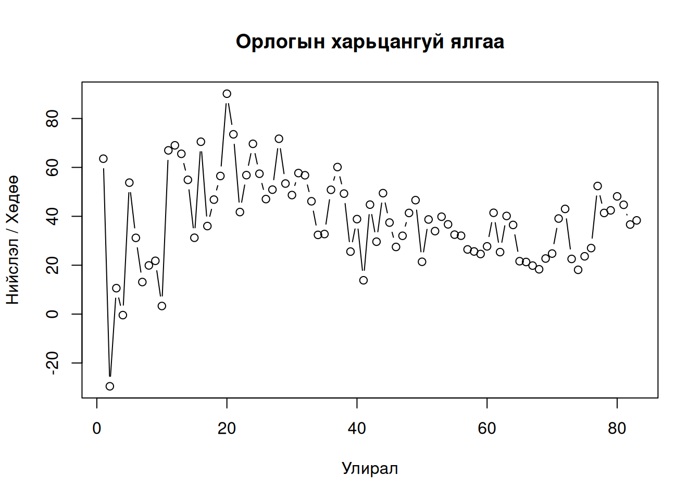
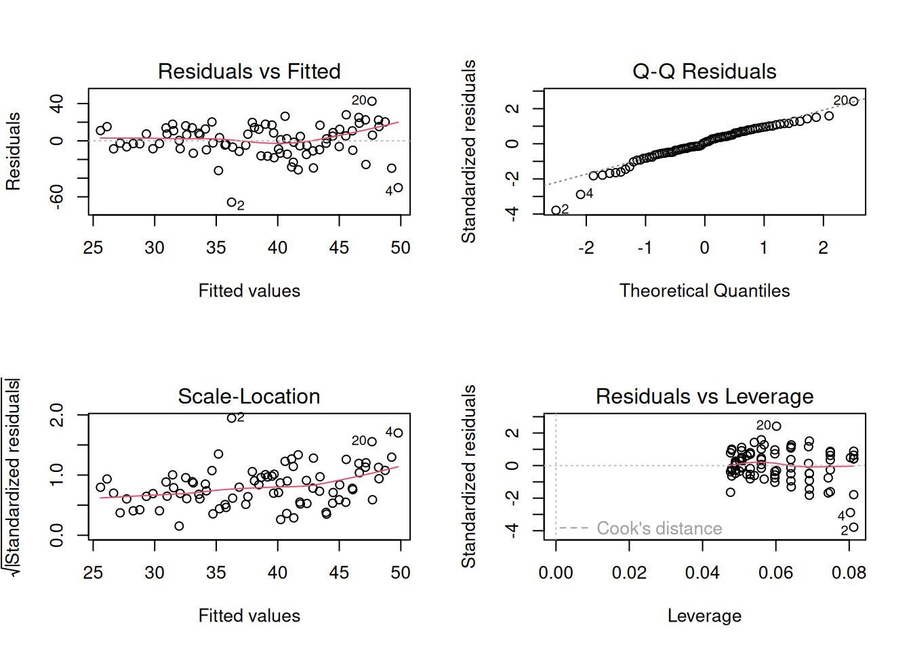
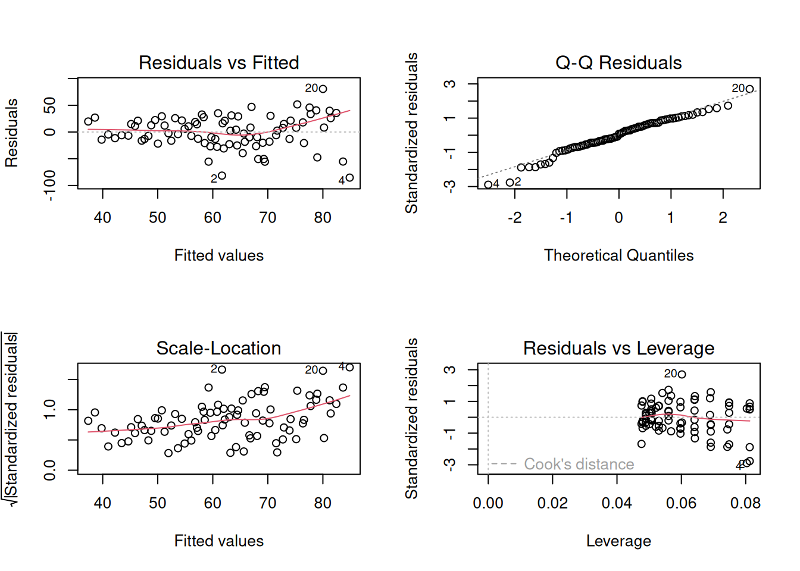

install.packages("readxl")Өрхийн сарын дундаж орлого дахь хот ба хөдөөгийн ялгааны өөрчлөлт
Математик статистик хичээлийн регрессийн шинжилгээ сэдвийн нэмэлт жишээ
Хураангуй
Энэхүү ажлаар нийслэл хот ба хөдөө орон нутаг дахь өрхүүдийн сарын дундаж орлогын харьцангуй ялгаанд өсөх эсвэл бууррах хандлага буй эсэх тухай асуултад ҮСХ-ны нээлттэй өгөгдөл дээрх шугаман регрессийн шинжилгээний үр дүнд үндэслэн хариулна.
1 Өгөгдөл бэлдэх
Өгөгдлийг ҮСХ-ны [1] нээлттэй өгөгдлийн DT_NSO_1900_018V1 ID бүхий хүснэгттэй харгалзах веб хуудсаас Excel форматтай файл байдлаар татаж авсан. Татсан файлын нэрийг “data.xlsx” гэж сольсон.
Өгөгдөл татахдаа “Суурьшил” хувьсагчийн “Нийслэл” ба “Хөдөө” категорийг, “Орлогын төрөл” хувьсагчийн “Нийт орлого” категорийг харин “Улирал” хувьсагчийн “2005-1”-ээс “2025-3” дуусталх утгуудыг сонгосон.
| Суурьшил | Орлогын төрөл | 2005-1 | 2005-2 | 2005-3 | 2005-4 | 2006-1 |
|---|---|---|---|---|---|---|
| Нийслэл | Нийт орлого | 194586.3 | 161433.4 | 159125.4 | 165363.8 | 224133.5 |
| Хөдөө | Нийт орлого | 118964.9 | 229083.4 | 143863.7 | 166049.6 | 145761.2 |
1.1 Өгөгдөл импортлох
Өгөгдөл бүхий файл Excel форматтай үүнийг R програмд импортлон оруулахад нэмэлт багц шаардлагатай бөгөөд readxl багц ашиглав. Үүнийг дараах тушаалаар суулгана.
Excel файл дахь өгөгдлийг readxl багц дахь read_excel() функцээр импортолно.
X <- readxl::read_excel(
"data.xlsx",
skip = 1 # Эхний 1 мөрийг алгасах
)Нийслэл ба хөдөөний өрхүүдийн орлогыг харьцуулсан шинжилгээ хийх тулд өгөгдлийн бүтцийг нийслэл ба хөдөө гэсэн багана бүхий хэлбэртэй болгоно. Үүний тулд хүснэгтийг эргүүлж transpose (t() функц) үйлдэл хийнэ. t() функцээр хөрвүүлэхэд мөрийн нэр баганын нэр болдог. Гэтэл readxl::read_excel() функц импортолсон өгөгдлөө тиббл бүтцээр гаргаж өгдөг ба тиббл нь мөрийн нэр дэмждэггүй. Иймээс мөрийн нэр дэмждэг датафрейм бүтэц ашиглана. Бас t() функц матриц бүтэцтэй утга буцаадаг. Матрицын элементүүд цөм нэг төрлийнх байдаг. Гэтэл өгөгдөл тоон болон тэмдэгт мөр гэсэн хоёр өөр төрлийн утгатай хувьсагчаас бүрдсэн. Иймээс “Орлогын төрөл” зэрэг тоон бус утгатай багануудыг өгөгдлөөс зайлуулна.
# Суурьшил хувьсагчийн утгыг мөрийн нэр болгох
X <- as.data.frame(X) # Мөрийн нэр дэмждэг датафрейм бүтэцтэй болгох
rownames(X) <- X$Суурьшил # Мөрийн нэр олгох
# Тоон бус утга агуулсан, хэрэгцээгүй багануудыг устгах
X$Суурьшил <- NULL
X$`Орлогын төрөл` <- NULL
# Хөрвүүлэх
X <- t(X) # Матриц бүтэцтэй өгөгдөл гарна.
# Матрицыг датафрейм болгох
X <- as.data.frame(X)Өгөгдлийн одоо буй бүтцийг харъя. Эхний хэдэн мөрийг л хэвлэнэ.
knitr::kable(head(X), caption = "Өгөгдлийн эхний хэдэн мөр")| Нийслэл | Хөдөө | |
|---|---|---|
| 2005-1 | 194586.3 | 118964.9 |
| 2005-2 | 161433.4 | 229083.4 |
| 2005-3 | 159125.4 | 143863.7 |
| 2005-4 | 165363.8 | 166049.6 |
| 2006-1 | 224133.5 | 145761.2 |
| 2006-2 | 224012.4 | 170759.7 |
1.2 Шаардлагатай хувьсагчдыг үүсгэх
Өгөгдөл хугацаан цуваа хэлбэртэй бөгөөд он, улирал гэсэн цаг хугацаа илэрхийлэх хувьсагч байна. Эдгээрийг тусдаа хувьсагч буюу багана болгоно. Мөн улирал нь угтаа 1-р улирал, 2-р улирал, 3-улирал, 4-р улирал гэсэн утга авдаг номинал төрлийн чанарын хувьсагч тул түүнийг фактор бүтэцтэй болгоно. Он ба улирал илэрхийлэх мэдээллийг одоогийн байдлаар мөрийн нэр агуулна.
X$year <- rownames(X) |>
substr(start = 1, stop = 4) |>
as.integer()
X$quarter <- rownames(X) |>
substr(start = 6, stop = 6) |>
factor(levels = 1:4, labels = c("I", "II", "III", "IV"), ordered = FALSE)Орлогын ялгааг харьцангуй ялгаа буюу \(\frac{\text{Орлого}_\text{нийслэл}-\text{Орлого}_\text{хөдөө}}{\text{Орлого}_\text{хөдөө}}\cdot 100\%\) байдлаар авч үзнэ. Ийм хувьсагчийг дараах байдлаар үүсгэнэ.
X$relative_diff <- {X$Нийслэл - X$Хөдөө} / X$Хөдөө * 100Эцэст нь цаашид ашиглахгүй мэдээллийг өгөгдлөөс зайлуулна.
rownames(X) <- NULL # мөрийг нэрийг арилгах
X$Нийслэл <- X$Хөдөө <- NULLИйнхүү бэлдсэн өгөгдөл дараах бүтэцтэй. Өгөгдлийн сүүлийн хэдэн мөрийг хэвлэж харуулав.
knitr::kable(tail(X), caption = "Бэлдсэн өгөгдлийн сүүлийн хэдэн мөр")| year | quarter | relative_diff | |
|---|---|---|---|
| 78 | 2024 | II | 41.36661 |
| 79 | 2024 | III | 42.43264 |
| 80 | 2024 | IV | 48.15427 |
| 81 | 2025 | I | 44.70964 |
| 82 | 2025 | II | 36.63422 |
| 83 | 2025 | III | 38.33001 |
2 Өгөгдлийн шинжилгээ
Эхлээд нийслэл ба хөдөөний өрхүүдийн орлогын ялгааг диаграммаар дүрсэлж харна.
plot(
X$relative_diff,
type = "b",
xlab = "Улирал", ylab = "Нийслэл / Хөдөө",
main = "Орлогын харьцангуй ялгаа"
)
2.1 Регрессийн шугаман загвар
Орлогын харьцангуй ялгааг он ба улирлаар тайлбарлана гэвэл дараах шугаман загвар авч үзнэ.
\[ \text{харьцангуй ялгаа}=\beta_0+\beta_1\cdot\text{он}+\beta_2\cdot\text{улирал} \]
2.1.1 Орлогын харьцангуй ялгаа тогтвортой эсэх
Орлогын харьцангуй ялгаа тогтвортой гэсэн таамаглалыг регрессийн шугаман загварын [2] тусламжтай шалгаж болно. Таамаглалыг дараах хэлбэрээр томъёолно.
\[ \begin{array}{l} H_0:\,\beta_1=0 \\ H_1:\,\beta_1\neq0 \end{array} \]
Хэрэв орлогын харьцангуй ялгааг тайлбарлахад он хувьсагч нөлөөгүй гэсэн агуулгатай дээрх таамаглалыг няцаавал энэ нь нийслэл ба хөдөөний өрхүүдийн орлогын харьцангуй ялгаа өсөх эсвэл буурах хандлагатай гэж баталсан явдал болно. Эсрэг тохиолдолд орлогын харьцангуй ялгаа тогтвортой гэж дүгнэнэ.
Регрессийн загварын параметрүүдийг үнэлэхэд R програмын lm() функц ашиглана. Харин дээрх таамаглал шалгалтыг summary() функцийн тусламжтай хийж болно.
model <- lm(formula = relative_diff ~ year + quarter, data = X)
summary(model)
Call:
lm(formula = relative_diff ~ year + quarter, data = X)
Residuals:
Min 1Q Median 3Q Max
-65.781 -9.144 1.197 12.569 42.488
Coefficients:
Estimate Std. Error t value Pr(>|t|)
(Intercept) 1116.5270 669.9703 1.667 0.0996 .
year -0.5328 0.3325 -1.603 0.1131
quarterII -11.9803 5.5966 -2.141 0.0354 *
quarterIII -6.5679 5.5966 -1.174 0.2441
quarterIV 1.5596 5.6685 0.275 0.7839
---
Signif. codes: 0 '***' 0.001 '**' 0.01 '*' 0.05 '.' 0.1 ' ' 1
Residual standard error: 18.13 on 78 degrees of freedom
Multiple R-squared: 0.1149, Adjusted R-squared: 0.06951
F-statistic: 2.531 on 4 and 78 DF, p-value: 0.04695Шинжилгээний үр дүнг харвал он хувьсагч ач холбогдолгүй гэсэн тэг таамаглал (\(p\text{-утга}\approx0.113\)) үл няцаагджээ.
Түүнчлэн оношлогооны дөрвөн диаграммыг [3] байгуулсан.
par(mfrow = c(2, 2))
plot(model)
par(mfrow = c(1, 1))Оношлогооны диаграммуудыг харвал үлдэгдлийн дисперс тогтмол биш бас хэвийн бус тархалттай гэж сэжиглэх үндэслэлтэй. Харин хэт их хөшүүрэгтэй буюу загварт онцгой нөлөөтэй утга алга байна.
Оношлогооны үзүүлэлтүүдийг сайжруулахын тулд хамааран хувьсагчийг хувиргадаг. Манай загварын хамааран хувьсагч сөрөг тоон утга агуулсан тул Yeo-Johnson хувиргалт [4] ашиглана. Тус хувиргалтыг дэмждэг хэд хэдэн багц R програмд байдаг бөгөөд энд car нэмэлт багц ашиглалаа. Уг хувиргалтыг тус багцын powerTransform() болон yjPower() функцүүдийн тусламжтай ашиглана. Багцыг нэмж суулгах шаардлагатай.
# Yeo-Johnson хувиргалт
yj <- car::powerTransform(model, family="yjPower")
X$relative_diff_yj <- car::yjPower(X$relative_diff, lambda = yj$lambda)
# Хувиргасан хувьсагч дээр загварыг ахин ажиллуулах
model_yj <- lm(relative_diff_yj ~ year + quarter, data = X)
# Оношлогоо
par(mfrow = c(2, 2))
plot(model_yj)
par(mfrow = c(1, 1))Оношлогооны диаграммуудыг харвал үлдэгдлийн тархалт засагдсан боловч гетеросцедастисити шинж тэмдэг төдийлэн бүдгэрсэнгүй гэж ажиглагдана.
summary(model_yj)
Call:
lm(formula = relative_diff_yj ~ year + quarter, data = X)
Residuals:
Min 1Q Median 3Q Max
-85.274 -17.185 2.465 21.230 80.539
Coefficients:
Estimate Std. Error t value Pr(>|t|)
(Intercept) 2517.1441 1135.9668 2.216 0.0296 *
year -1.2148 0.5637 -2.155 0.0343 *
quarterII -19.7561 9.4892 -2.082 0.0406 *
quarterIII -11.9568 9.4892 -1.260 0.2114
quarterIV 3.4508 9.6113 0.359 0.7205
---
Signif. codes: 0 '***' 0.001 '**' 0.01 '*' 0.05 '.' 0.1 ' ' 1
Residual standard error: 30.75 on 78 degrees of freedom
Multiple R-squared: 0.1379, Adjusted R-squared: 0.09371
F-statistic: 3.12 on 4 and 78 DF, p-value: 0.01955Шинэчилсэн загварын тоймыг харвал орлогын ялгаанд он хувьсагч урвуу нөлөөтэй \(\alpha=0.05\) ач холбогдлын түвшинд батлагджээ. Өөрөөр хэлбэл нийслэл болон хөдөөний өрхүүдийн орлогын харьцангуй ялгаа цаг хугацааны явцад буурах хандлагатай. Харин загварын детерминацын коэффициент \(R^2\) бага байгаа нь орлогын ялгааг бүрэн тайлбарлая гэвэл өөр нэмэлт хувьсагч авч үзэх шаардлагатайг илтгэнэ.
2.1.2 Орлогын харьцангуй ялгааны өөрчлөлт дэх улирлын нөлөө
Орлогын харьцангуй ялгааны өөрчлөлтийг тайлбарлахад улирал ач холбогдолтой нь дээрх үр дүнгүүдээс ажиглагдсан. Тухайлбал хамгийн сүүлийн загварын хувьд дараах үр дүн гарсан.
summary(model_yj)
Call:
lm(formula = relative_diff_yj ~ year + quarter, data = X)
Residuals:
Min 1Q Median 3Q Max
-85.274 -17.185 2.465 21.230 80.539
Coefficients:
Estimate Std. Error t value Pr(>|t|)
(Intercept) 2517.1441 1135.9668 2.216 0.0296 *
year -1.2148 0.5637 -2.155 0.0343 *
quarterII -19.7561 9.4892 -2.082 0.0406 *
quarterIII -11.9568 9.4892 -1.260 0.2114
quarterIV 3.4508 9.6113 0.359 0.7205
---
Signif. codes: 0 '***' 0.001 '**' 0.01 '*' 0.05 '.' 0.1 ' ' 1
Residual standard error: 30.75 on 78 degrees of freedom
Multiple R-squared: 0.1379, Adjusted R-squared: 0.09371
F-statistic: 3.12 on 4 and 78 DF, p-value: 0.01955Дээрх үр дүнгээс II улирлыг төлөөлөх дамми хувьсагч ач холбогдолтой (\(p\text{-утга}\approx0.041\)) болох нь харагдана.
Дүгнэлт
- Нийслэл болон хөдөөний өрхүүдийн орлогын харьцангуй ялгаа цаг хугацааны явцад буурах хандлагатай.
- Орлогын харьцангуй ялгааны өөрчлөлтийг тайлбарлахад улирлын нөлөө ач холбогдолтой.
Ашигласан материал
[1]
Үндэсний Статистикийн Хороо (ҮСХ), “Өрхийн орлого, зарлагын үндсэн үзүүлэлтүүд (DT_NSO_1900_018V1).” Accessed: Dec. 13, 2024. [Online]. Available: https://www.1212.mn/mn/statcate/table-view/Society, development/Household income and expenditure/DT_NSO_1900_018V1.px
[2]
Б.Жамъяншарав, “Математик статистик,” Улаанбаатар: МУИС Хэвлэлийн газар, 2023, ch. 5, pp. 217–222.
[3]
J. J. Faraway, “Linear models with r,” Second., CRC Press, 2014, ch. 6, pp. 73–97.
[4]
S. Weisberg, “Yeo–johnson power transformation,” School of Statistics, University of Minnesota, Technical Note, 2009. Accessed: Dec. 13, 2025. [Online]. Available: https://www.stat.umn.edu/arc/yjpower.pdf